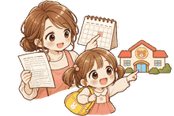
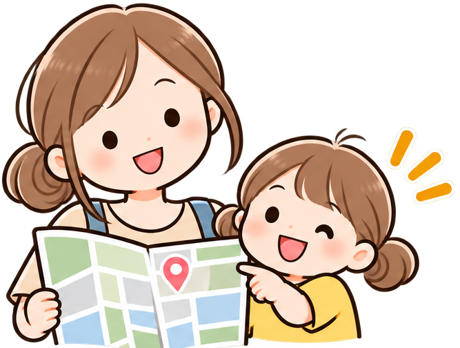
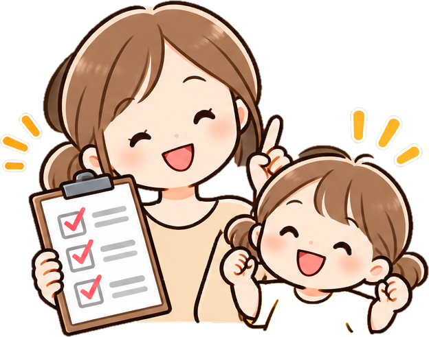

OKAYAMA KOSODATE NAVI
子育て備忘録
知っておくとちょっと助かる、子育てのあれこれ。
認定こども園とは？保育園・幼稚園との違いと1号・2号・3号認定をやさしく解説
認定こども園の仕組み、1号・2号・3号認定、4つのタイプ、保育園・幼稚園との違いを整理。後半では岡山市の申込方法も紹介します。
続きを読む →幼稚園とは？保育園との違い、対象年齢・預かり保育をやさしく解説
幼稚園の基本、対象年齢、教育時間、預かり保育、保育園・認定こども園との違いを整理。後半では岡山市の手続きも紹介します。
続きを読む →保育園とは？幼稚園・認定こども園との違い、対象年齢や利用条件をやさしく解説
保育園の基本、対象年齢、保育の必要性、幼稚園・認定こども園との違いをやさしく整理。後半では岡山市の申込みも紹介します。
続きを読む →岡山市で年度途中に転園できる？きょうだい別園・転居時の条件を解説
岡山市で年度途中に保育園を転園したい場合のルールを解説。原則不可の考え方、転居・転職、きょうだい別園、4月転園、地域型保育事業の扱いを整理します。
続きを読む →
岡山市で途中入園するには？申込期限・空き状況・手続きの流れを解説
岡山市で年度途中に保育園へ入園したい方向けに、申込期限、受入見込みの公開時期、必要書類、電子申請、転入予定の場合の注意点を整理します。
続きを読む →岡山市は保育園に入りやすい？待機児童・空き状況・保活のポイント【2026年最新】
待機児童0人の意味、園ごとの受入見込み、途中入園、利用調整、保育コンシェルジュなど岡山市の保活ポイントを整理します。
続きを読む →保育園・幼稚園の名前付けがラクに！スマホ対応ラベルマシンを実際に使ってよかった話
入園準備で大変な名前付け。実際に使って便利だったスマホ対応ラベルマシンの良かった点と、手書きとの使い分けをまとめました。
続きを読む →
岡山市の保育園申込みに必要な書類は？電子申請・就労証明書を解説【2027年度】
岡山市の保育園申込みに必要な条件・書類、就労証明書、電子申請のポイントを2027年度向けに整理します。
続きを読む →
【2027年4月入園】岡山市の保育園申込みはいつから？令和9年度の日程まとめ
令和9年度の4月入園に向けて、保育利用ガイド公開日、一次募集、電子申請、結果通知など最新の日程を整理しました。
続きを読む →
保育園探し、まず何から始める？
園探しから空き状況、申込み時期、利用調整点数まで。最初に確認しておきたいことを順番にまとめました。
続きを読む →
保育園を選ぶポイント Part1
園見学でまず見たい5つのポイント。子どもの様子、先生の関わり方、保育室の環境など、パンフレットだけでは分からない部分をまとめました。
続きを読む →
保育園を選ぶポイント Part2
保育方針、給食、安全面、園とのコミュニケーション、通いやすさ。入園後の毎日まで考えて確認したいポイントをまとめました。
続きを読む →